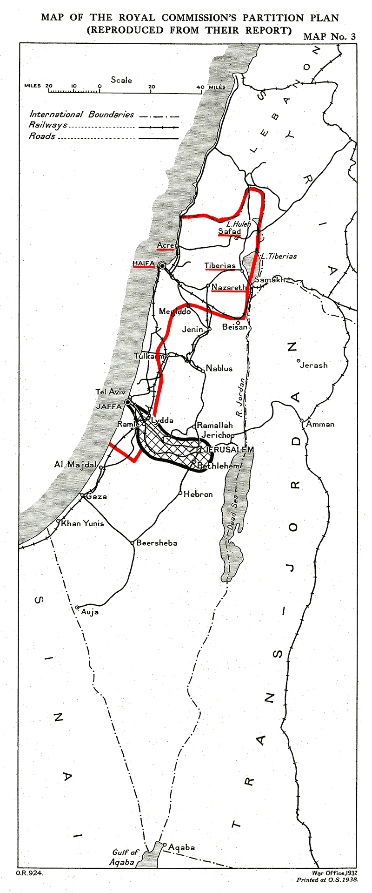

‹ Topics · A demographic reconstruction of the coastal plain
No Ottoman source counts “the coast” as a unit — population was registered by district (qada) or by town, and each district mixes coastal plain with interior hinterland. This sheet reconstructs the population of the four coastal districts — Gaza, Jaffa, Haifa and Acre — at four benchmarks across the long nineteenth century, from travellers’ counts and European consular estimates through the Ottoman registers that Justin McCarthy corrected for undercount. The numbers are order-of-magnitude ranges, not points: the 1800 and 1840 figures are largely inference, while 1880 and 1914 rest on registers.
The Ottoman qadas of Gaza, Jaffa, Haifa and Acre — the coastal plain plus its immediate hinterland. Schematic; boundaries approximate.
Each district folds in some interior hinterland — Gaza the Negev margin, Acre and Haifa the western-Galilee foothills — so the zone is coast plus immediate hinterland. The hollow markers (Safed, Tiberias, Jerusalem) show where the region’s Jews actually lived: inland, not on the coast.
Total of the Gaza + Jaffa + Haifa + Acre districts. Shaded band = the estimate range; the line runs its mid-point.
Built from two halves: the coastal towns (Gaza, Jaffa, Acre, Haifa, Ramla, Lydda, Majdal — Ben-Arieh’s series of traveller/consular estimates) and the rural coastal plain (the district countryside, from the 1871/72 Ottoman salname and McCarthy’s corrected census figures). The 1800 town anchor is the weakest cell — Volney counted Gaza at only ~2,000 in 1783–85, against Ben-Arieh’s 8,000 for 1800, a fourfold clash.
| Date | Coastal towns | Rural coastal plain | Total coast | Confidence | Evidence |
|---|---|---|---|---|---|
| ~1800 | ~22,000 | ~33,000–53,000 | ~55,000–75,000 | Low | TravellerSynthesisInference |
| ~1840 | ~32,000–35,000 | ~55,000–85,000 | ~90,000–120,000 | Moderate | ConsularRegisterInference |
| ~1880 | ~50,000–56,000 | ~95,000–115,000 | ~150,000–170,000 | Mod.–good | RegisterSynthesis |
| ~1914 | ~110,000–125,000 | ~120,000–135,000 | ~230,000–255,000 | Good | Register |
Why ranges, not points. The household multiplier (×6 vs ×5) swings every rural total ±15%; the 1849/1852 registers count male subjects, doubled to a total; Ottoman registers under-record women, children and Bedouin, so every raw figure is a floor; and the Gaza district carries a Negev/Bedouin tail while Acre and Haifa carry western-Galilee foothill villages, so the zone is coast plus immediate hinterland by necessity.
The registers carry a Muslim / Christian / Jewish breakdown. Two features stand out on the northern coast (the Haifa + Acre districts): an unusually large Christian minority — Greek Orthodox and Melkite — and a negligible Jewish presence until the 1900s. Haifa town was ~46% Christian in 1905; Acre town ~23%. By contrast the southern coast was lopsided the other way — Gaza district was ~99% Muslim (11 Jews recorded in 1886).
| Northern coast (Haifa + Acre) | Muslim | Christian | Jewish | Source |
|---|---|---|---|---|
| 1852 male-based shares | ~85% | ~14% | ~1% | Register |
| 1886–92 | ~79% ~34,000 | ~20% ~8,400 | ~1.5% ~600 | Register |
| 1912–13 | ~78% ~55,200 | ~19% ~13,300 | ~3.6% ~2,545 | Register |
Where the coast’s Jews actually were — inland, not on the shore. The Jewish population of this whole northern zone sat in the Old-Yishuv anchors of the interior Galilee — Safed and Tiberias — not on its coast. (Community estimates below are fuller than the registers, which badly undercounted Galilee Jews.)
| Date | Inland Galilee Jews Safed + Tiberias | Coastal-arm Jews Haifa + Acre | Ratio | Source |
|---|---|---|---|---|
| 1800 | ~2,250 | ~0 | — | Synthesis |
| 1840 | ~2,500 post-1837 quake | <100 | — | Synthesis |
| 1880 | ~6,700 | ~600 | ~11 : 1 | SynthesisRegister |
| 1914 | ~13,250 | ~2,545 | ~5 : 1 | SynthesisRegister |

Peel assigned the northern coastal arm (Haifa, Acre, and the near-empty Sharon flat) to the Jewish state and left the populous southern and central coast (Gaza, Jaffa city as an Arab enclave, Ramla, Lydda) to the Arab state. So for most of the century, roughly four-fifths of the coast’s people lived on what Peel marked as the Arab side.
| Date | Coast inside Peel Haifa + Acre + Sharon | Coast outside Gaza + Jaffa city + Ramla/Lydda | In-Peel share | Evidence |
|---|---|---|---|---|
| ~1800 | ~12,000–16,000 | ~40,000–55,000 | ~20% | Inference |
| ~1840 | ~18,000–24,000 | ~70,000–95,000 | ~20% | Inference |
| ~1880 | ~50,000–60,000 | ~95,000–110,000 | ~33% | Register |
| ~1914 | ~70,000–85,000 | ~150,000–175,000 | ~32% | Register |
The full proposed Jewish state was carried by the Galilee interior, not the coast. The coastal arm above was a minority of the whole — whose demographic body was the liwa’ of Acre (the Galilee plus its northern coast). Even by population, Peel’s would-be Jewish state was a Galilee-interior state with a northern coastal margin — and it was ~90% Arab through 1914. Jewish near-parity inside the lines arrived only with the post-1933 Fifth Aliyah, in the few years just before partition was proposed.
| Date | Galilee (liwa’ of Acre) | Sharon + Jezreel | Peel Jewish-state total | of which coastal |
|---|---|---|---|---|
| ~1800 | ~55,000–62,000 | ~5,000–9,000 | ~60,000–70,000 | ~22% |
| ~1840 | ~65,000–70,000 | ~7,000–11,000 | ~72,000–82,000 | ~27% |
| ~1880 | ~85,000–95,000 | ~11,000–19,000 | ~95,000–115,000 | ~50% |
| ~1914 | ~145,000–152,000 | ~25,000–40,000 | ~170,000–190,000 | ~40–45% |
This is a reconstruction, not a recall: no source reports “the Palestine coast” as a population unit at these dates. The zone is operationalised as the four Ottoman coastal districts — Gaza (Gaza, Majdal, Khan Yunis), Jaffa (with Ramla and Lydda), Haifa and Acre — the closest administrative match to “the coast.” Each district folds in some interior hinterland (the Gaza Negev tail, the western-Galilee foothills behind Acre/Haifa), so this is coastal plain plus immediate hinterland.
The four benchmarks rest on different evidence, and are tagged accordingly. 1880 and 1914 are the firmest — Ottoman registers (the 1871/72 salname; the 1886–92 and 1911–13 counts), undercount-corrected with McCarthy’s own factors. 1840 leans on the 1847 French-consular district estimates and the 1849 Ottoman Defter-i Nüfus (cross-checking each other ~75,000 vs ~104,000 for the southern coast). 1800 is the softest — Volney’s 1783–85 town counts and structural inference from the depopulated-frontier baseline. All figures are order-of-magnitude ranges; the early dates especially should be read as brackets, not points.
The Peel section is an explicit retrojection — the 1937 boundary laid over nineteenth-century population to locate people relative to a later line. It is a descriptive curiosity, held to the same evidentiary tagging as the rest of the sheet, and is not an argument about the merits of partition.
Drawn from · McCarthy, The Population of Palestine (1990) · Schölch, Palestine in Transformation 1856–1882 (1993), Tables 1–13 · Karpat, Ottoman Population 1830–1914 (1985) · Volney, Travels through Syria and Egypt (1788) · Ben-Arieh’s town series (via Schölch) · Bartal & Ben-Arieh (eds.), History of Eretz Israel vol. 8, for the Safed/Tiberias series · Peel Commission, Cmd 5479 (1937), Appendix 4, for the partition boundary.